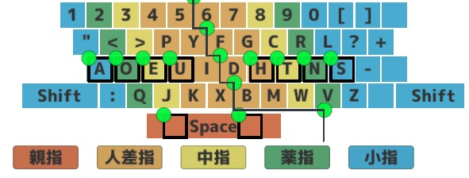
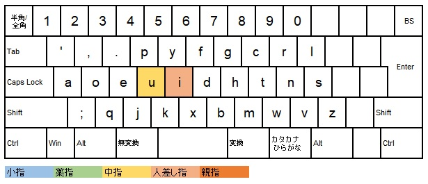

From the New World
Dvorak配列で出来る最適化の一覧
Dvorak配列で出来る最適化を「ランク別（S～C）」に紹介します。
ここでいうランクとは、
・導入したときにどれだけの打鍵速度向上が見込めるか
・導入したときのリスク（安定性が下がる、手の形が崩れるなど）
・導入のしやすさ（どれくらい練習すれば習得できるか）
・英語における出現頻度（高いものほど効果・優先度も高いため）
以上4点を総合的にみて判定しています。
最初に、本記事の方針や、使用する単語の意味などについて補足しておきたいと思います。
・最適化
画像引用：みんなの運指表 様

打鍵速度を高めるために、上記画像とは異なる運指で打鍵すること、としています。
・準同指
Qwertyの「nau（右人→左小→右人）」のように、同指ではないが、1~2打鍵を間に挟んで同指となる打鍵パターンを、
本記事では「準同指」と呼称します。
このようなパターンを「nau（右人→左小→右中）」と最適化することで、指の跳躍を無くすことができます。
超高速域では、このような指の跳躍もロスになると考えられるため、僕はこのようなパターンも最適化しています。
・使用する指の表記方法について
数字（1～0）で表記するのが一般的かと思いますが、本記事では分かりやすさのため右人・左親といったように日本語で表記しています。
・シフトキー押下時の運指について
僕はシフトキー押下時も、上記画像の標準運指とは異なる運指で打鍵しますが（例：左シフト押下時にaを左薬など）、
シフトキー押下時の運指を全部パターン分けして紹介するのは、自分の中で体系化できていないこともあって難しいです。
よって本記事では、シフトキー押下時の運指については記載していません。
以上4点が補足となります。
また、本記事で使用しているキー配置の画像は、パソ活ラボ様の
キーボード配列のレイアウトを考えるのに便利なスプレッドシート
を使用させていただきました。
では、最適化の紹介に移ります（なお、本記事の一番最後で、未導入の最適化も紹介しています）。
*** Sランク ***
m, w（右親）
親指の導入はQwerty配列でも賛否あると思うので、とりあえず最初に書いてみました。
僕は全てのm, wを右親で打鍵しています（逆に言うと、右親以外の指では一切打鍵しません）。
まずメリットから。
mとf,g,d,h,bの同指、およびwとc,tの同指を回避し、アルペジオで処理することができます。
特にmb, twのパターンは英文において頻出であり、これらをアルペジオで処理できるのが非常に大きいです。
また、準同指を回避できるパターンも非常に多いです。
次にデメリット。
ただでさえ窮屈なDvorak配列の右手がさらに窮屈に……と思っていましたが、そうでもないです。
むしろ自然な手の形のまま処理できるパターンが増えたので、右手はむしろ伸び伸びと使えるようになりました。
それよりも、習得難易度の高さが何よりも最大のデメリットだと思います。
習得難易度の高さを考慮してもなお、現状があまりにも快適すぎるため、堂々のSランクです。
【英単語例】member（mbの同指回避）, twenty（twの同指回避）, world（単純に打ちやすくなる）
p（左中）, yui（左人）
Dvorak配列において、最も複雑かつ、研究しがいのある最適化です。
py,pu,pi（yp,up,ip）の同指、p-y,p-u,p-i（y-p,u-p,i-p）の準同指を回避するために、pを右中で、y,u,iを右人で打鍵します。
パターンが含まれる単語が膨大なので、パターン別に覚えるというよりは、「この単語はこの打ち方！」と単語別に覚えたほうがいいと思います。
特にpi,puは運指が簡単かつ出現頻度も高く、最適化しない理由がないレベルで有用かと思います。Sランク。
【英単語例】
copy（pyの同指回避）, play（p-yの準同指回避）
typing（ypの同指回避）, symptom（y-pの準同指回避）
put（puの同指回避）, pause（p-uの準同指回避）
up（upの同指回避）, dump（u-pの準同指回避）
pick（piの同指回避）, prise（p-iの準同指回避）
ship（ipの同指回避）, simple（i-pの準同指回避）
e（左中）, ピリオド（左薬）

eの直後にピリオドがあるパターンにおいて、同指を回避するために、ピリオドを左中ではなく左薬で打鍵します。
eの直後にピリオド、というパターンは英文では非常に多く、特にe-typingなどの短文種目では超強力な最適化です。
【英単語例】-e.
j（左人）
je専用の最適化。同指を回避するために、jを左中ではなく左人で打鍵します。
英語においてjeのパターンはそれほど頻出ではありませんが、運指が非常に簡単で、正直最適化しないでおく理由がないので、Sランク。
【英単語例】jet, jealous
x（右人）
xの直後にp,y,u,i,kが出現する場合は、同指を回避するために、xを左人ではなく右人で打鍵します。
そのほか、右人で打った方がスムーズに打てる単語が存在するので、その場合も右人で打鍵します。
単語ごとに左人で打つか右人で打つかを覚えないといけないので大変ですが、効果・優先度はかなり高いと思うので、Sランク。
【英単語例】expert（直後にp）, execute（右人のほうが打ちやすい）
u（左中）, i（左人）

ui（iu）の同指、およびu-i（i-u）の準同指を回避するために、uを左中、iを左人で打鍵します。
iuはほとんど出てきませんが、uiはそこそこ出てくるパターンなので、優先度は高いと思います。
運指も特に難しくないので、Sランク。
【英単語例】quick（同指回避）, aquarium（同指回避）, beautiful（準同指回避）
*** Aランク ***
g（右中）, h（右人）
ghの同指を回避するために、gを右中、hを右人で打鍵します。
頻出のghをアルペジオで処理できるようになるので、それなりの速度向上が見込めます。
似たパターンの「ght」に関しては、現状、この最適化は使用していません（する余地はあると思いますが、リスクが高いため見送っています）。
運指はやや難しいですが、頻度が高いのでAランク。
【英単語例】enough
c（右中）, t（右人）
ctの同指を回避するために、cを右中、tを右人で打鍵します。
頻出のctをアルペジオで処理できるようになるので、上のghの最適化と同様に、それなりの速度向上が見込めます。
cの直前がf,d,gの場合は、長距離の同指または準同指が発生してしまうため、この場合は使用しません。
重要とは思うのですが、打鍵後の指の形にかなり不安が残り、リスクが高いかなと思うのでAランク。
【英単語例】collect, direction
【使用しないパターン】affect, dictionary
p（左中）, e（左薬）
pとy,u,iの最適化の直後（直前）にeを打鍵するパターンにおいて、同指を回避するために使用します。
pとy,u,iの最適化を習得していれば自然に打鍵できるので習得難易度としては低めかと思います。
個人的にですが、英語において一番頻度の高いeを左中以外の指で押すのはややリスクが高いと思っているため、Aランク。
【英単語例】type（同指回避）, episode（同指回避）, supper（準同指回避）, flipper（準同指回避）
up,ip（左人→左中）, ピリオド（左薬）
up,ipの最適化の直後にピリオドを打鍵するパターンにおいて、同指を回避するために使用します。
こんなパターン現実的な頻度で出てくるのか？って感じですが、少なくともtyperacer, e-typingではちょいちょい出てきます。
up,ipの最適化とセットで習得してしまえばよいと思います。Aランク。
【英単語例】-up. -ip.
*** Bランク ***
d（右人）, g（右中）
dgの同指、およびd-gの準同指を回避するために、dを右人、gを右中で打鍵します。
dgをアルペジオで処理できるようになるのが利点です。
頻度はそこまで高くないと思いますが、運指が簡単で習得しやすいのでBランク。
【英単語例】judge, dog, god
v（右小）
主にverの準同指を回避するためにvを右小で打鍵します。
副産物として、rv, nvのパターンをアルペジオで打鍵できるようになります。
また、fiveなどの指を大きく開く必要がある（手が小さいので厳しい）パターンについても、
vを右子で打鍵することで、指を大きく開く必要がなくなり、スムーズに処理できます。
英文におけるverの頻度はかなり高いので、重要な最適化とは思うのですが、
手が大きい or 小指が長い人は物理的に不可能な場合がありそうなのでBランク。
【英単語例】never（ver準同指回避）, servant（rvアルペジオ）, invent（nvアルペジオ）
i（右人）
現状、「like」パターン専用の最適化。
ikの同指を回避するために、iを右人で打鍵します。
運指がやや難しいですが、likeが含まれる英単語の頻度が英文ではかなり高いのでBランク。
【英単語例】like, unlike, likely
k（左人）, u（左中）

kuの同指を回避するために、kを左人、uを左中で打鍵します。
kuのパターンが含まれる英単語は、僕は「skull」しか見たことないので、実質一単語専用の最適化です。
一単語専用ですが、運指が簡単なのでBランク。
【英単語例】skull
*** Cランク ***
b（右人）, g（右中）
b-gの準同指を回避するために、bを右人、gを右中で打鍵します。
bgのアルペジオのパターンは、僕が覚えている限りでは英語にはほぼ無かったように思います。
頻度がそこまで高くなく、かつ準同指の回避にしか使わないのでCランク。
【英単語例】big, begin
f（左人）
fを右人で打鍵した場合に、同指や準同指が発生したり、打ちづらかったりするパターンが複数あるため、
それらを回避するためにfを左人で打鍵します。全てのパターンにfaが絡みます。
本当ならfeやfoのパターンにも使いたいのですが、手が小さいので指を開くのが厳しく、導入は見送っています。
使用する単語が少なく、かつ右人で打鍵するパターンと区別する必要もあるので、Cランク。
【英単語例】grandfather（dfの同指回避）, fact（fa+ctのアルペジオで打鍵できるようになる）
k（左中）, i（左人）
kiの同指を回避するために、kを左中、iを左人で打鍵します。
kiをアルペジオで処理できるようになるので、特定の短文を打つ際に刺さったりします。
また、標準のDvorak配列で日本語を打つ際にも有用です。
頻度がそこまで高くなく、運指が難しいのでCランク。
【英単語例】king, ski
i（左中）, x（左人）
ixの同指を回避するために、iを左中、xを左人で打鍵します。
xは右人でも打鍵するパターンがあるので、ixのパターン全てをこの最適化で打鍵するわけではありません。
例をあげると、sixteenは右人でxを打鍵します（アルペジオの打鍵数が変わらないのと、こちらのほうがより手の形を崩さず打てるため）。
頻度がそこまで高くなく、運指が難しく、かつ右人で打鍵するパターンと区別する必要があるのでCランク。
本記事で紹介する最適化の中では一番効果が薄いかもしれないです。
【英単語例】six, fix, mix
d（右人）, h（右中）
dhの同指を回避するために、dを右人、hを右中で打鍵します。
この最適化は、タイプウェル拡張英単語A-Fの「adhere」にしか使ったことないです。
1単語のみ、それも頻度が高いわけでもない単語の最適化ですが、やらない理由もないので導入してます。Cランク。
【英単語例】adhere
*** 導入していない最適化 ***
y（右人）
英文（特にtyperacer）において頻出のyouを打ちやすくするための最適化。
標準運指でyouを打鍵する場合、左人→左薬→左人で準同指が発生しますが、yを右人で打鍵することで回避できます。
iやxに比べて、yは右人で打鍵するには遠すぎるため（手が小さいことも考慮）、導入はしていません。
【英単語例】you
ght（右中→右人→右薬）
英文において頻出のghtのパターンを打ちやすくするための最適化。
さすがに運指が難しすぎて、安定性を著しく下げそうな気がするため、導入はしていません。
【英単語例】right, thought
l（右薬）
sl, zlの同指を回避するために、lを右薬で打鍵します。
頻度はそれほど高くないのですが、出てくるたびに、「lを右薬で打ちたいな～」とは思います。
しかし、手の形がかなり崩れてしまい、リスクが高そうなので、導入はしていません。
【英単語例】-sly, puzzle
親指で打鍵するキーをさらに増やす
候補としては、左親がq,j,k、右親がbです。
・スペースが左親固定なので、左親でスペース以外のキーを打鍵するのは同指が逆に増える可能性がある
・高ランクの最適化と比較して、得られる速度向上が明らかに低そう
・導入のコストが高い
などの理由から、導入はしていません。
両親指でスペースを打鍵する
両親指でスペースを打鍵したほうが好ましいパターンは、具体的には思いつきませんが存在はしていそうです。
すでに右親の最適化をしてしまっていることに加え、具体的にどれだけ効果があるか全く想像できないため、導入はしていません。
おわりに
タイパーの聖典である「タイピング Professionals」において、Dvorak配列の偉大な先駆者であるQuvotaさんが以下のように語っています。
・してないですね、基本的に。（Dvorakでは最適化を使っていたんでしょうか？という質問に対して）
この話をどこかで聞いて、それで僕は「最適化をとことんやってやろう！」と思って、ここまでやってきたわけです。
結果として、Quvotaさんの基本英単語1500の記録を抜くことができましたし、まあ、間違ってなかったのかなと思います。
Dvorak配列の最適化に関しては、もう研究し尽くしたと、現時点では思っています。
ひねり出すことは出来るかもしれませんが、それらはもはや極端にリスクが高いか、使用頻度が低いかのどちらか（あるいは両方）だと思うので、
おそらく導入することはないと思います。
Dvorak配列を使用する上で生じる様々なリスク（一番は速度でQwerty配列に事実上劣っているということでしょうか）を理解しながらも、
もし練習し始める人がいたとしたら、本記事がその人の助けになれば幸いです。
- Top Page -